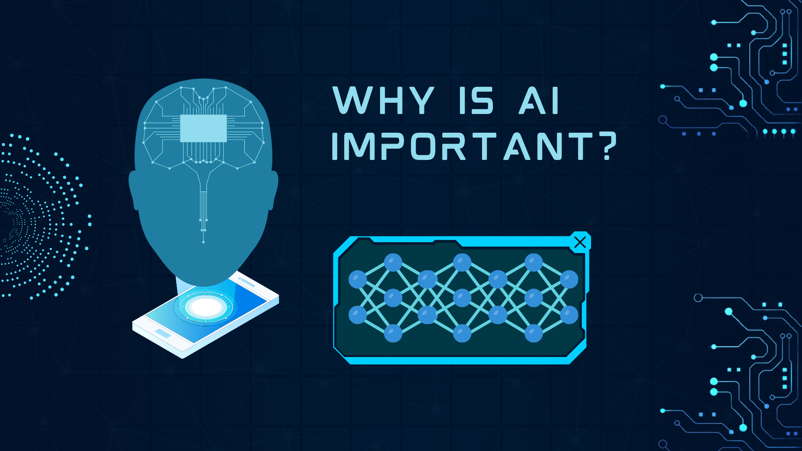
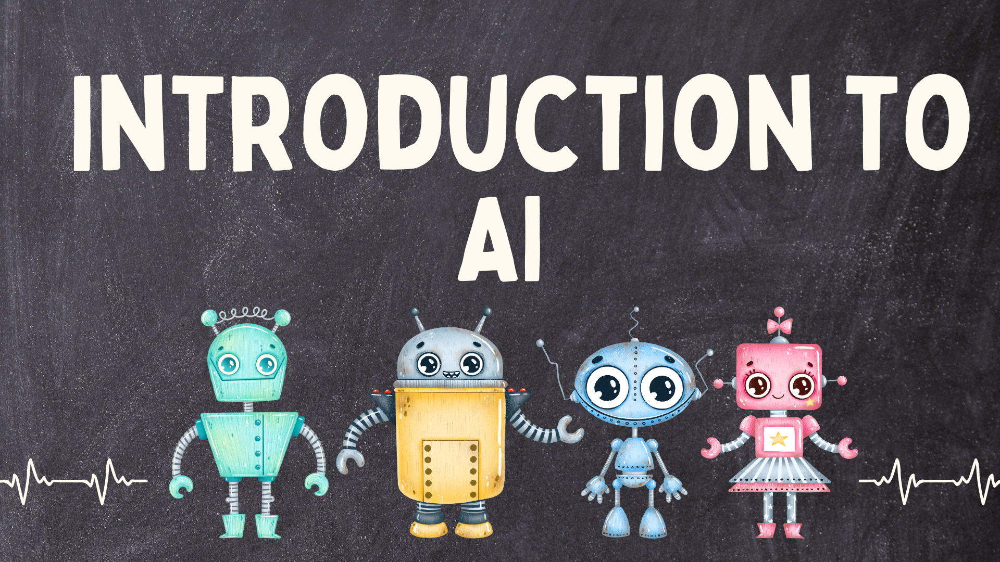
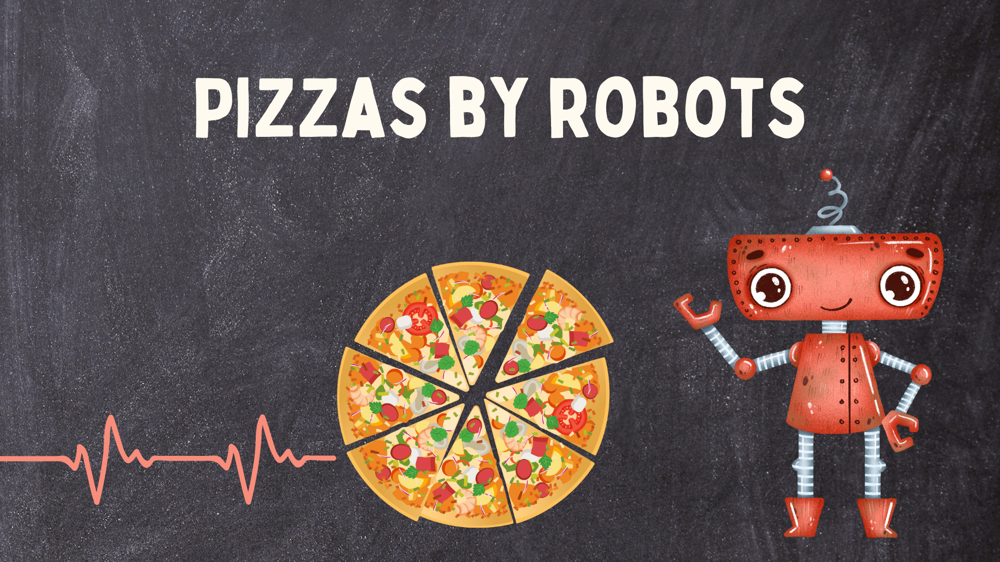
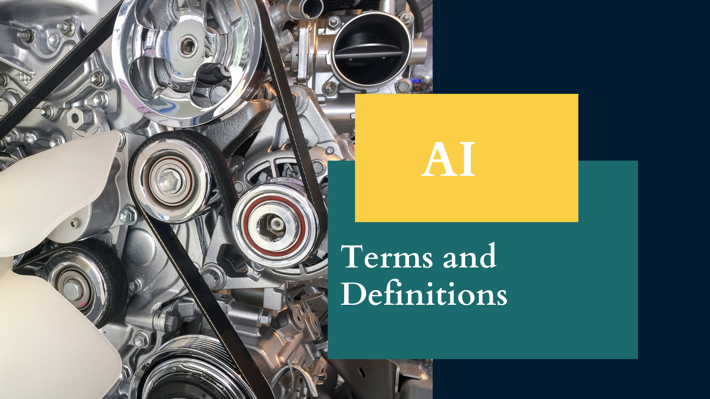
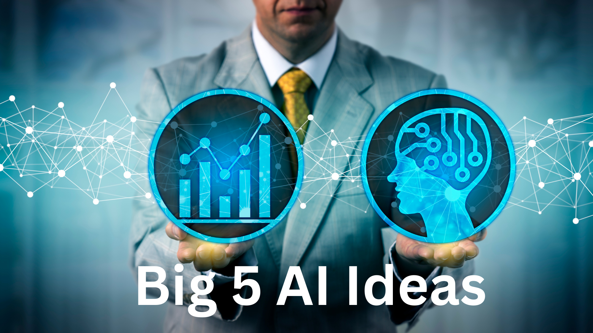
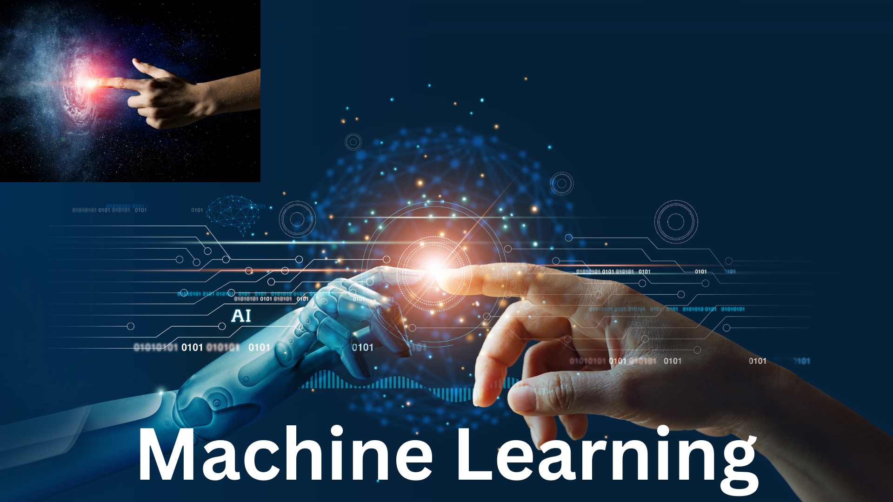
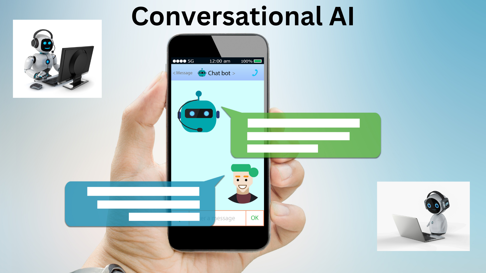
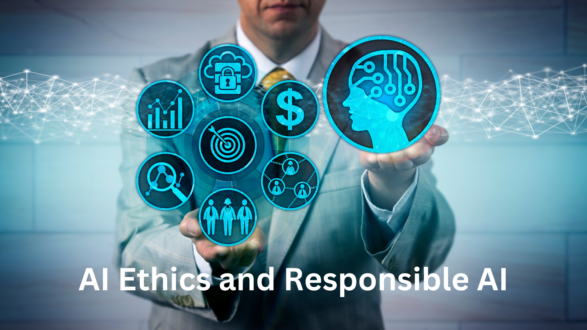

Introduction:
Welcome to "Basics of AI without the Hype," an insightful ebook designed to provide you with a comprehensive understanding of Artificial Intelligence (AI) and its practical applications. In this digital age, AI has emerged as a transformative technology that permeates various industries and affects our daily lives in profound ways. This ebook aims to demystify AI, dispel the hype surrounding it, and equip you with the knowledge to navigate this exciting field.
Basics of AI Without the Hype!
Why is AI Important?

Artificial Intelligence has become one of the most significant technological advancements of our time. Its impact spans across industries such as healthcare, finance, education, transportation, and entertainment, revolutionizing the way we live, work, and interact. The importance of AI lies in its ability to process vast amounts of data, recognize patterns, and make intelligent decisions, often surpassing human capabilities. By automating tasks, optimizing processes, and providing valuable insights, AI has the potential to enhance efficiency, drive innovation, and improve the quality of life for individuals and society as a whole.
AI is transforming healthcare by enabling more accurate diagnoses, personalized treatments, and improved patient care. In finance, AI is revolutionizing fraud detection, portfolio management, and customer service. In education, AI-powered tools facilitate personalized learning experiences and adaptive assessments. The potential of AI is boundless, and its impact on various sectors continues to expand.
Moreover, AI offers tremendous opportunities for addressing complex societal challenges. From climate change and sustainable development to tackling poverty and enhancing accessibility, AI can be leveraged as a powerful tool for social good. However, with great power comes responsibility. Ethical considerations, fairness, transparency, and accountability must guide the development and deployment of AI to ensure its benefits are realized equitably and without unintended consequences.
By gaining a solid understanding of the basics of AI, its applications, and its ethical implications, you are empowered to make informed decisions and contribute to the responsible and meaningful advancement of AI technologies. This ebook serves as your guide, providing a comprehensive exploration of AI, unraveling its terminology, delving into its practical implementations, and inspiring you to embrace the transformative potential of AI while upholding ethical standards.
Now, let us embark on this journey together, diving into the basics of AI without the hype, to explore its concepts, discover its practical applications, and understand how it can shape our world for the better.
Chapter 1: Introduction to AI
1.1 What is AI?
Artificial Intelligence (AI) refers to the development and use of computer systems that can perform tasks that typically require human intelligence. AI systems aim to simulate human cognitive abilities such as learning, problem-solving, perception, and decision-making. By leveraging algorithms and computational power, AI enables machines to analyze vast amounts of data, learn from patterns, and make intelligent decisions.

1.2 Introducing AI
AI has a rich history dating back to the mid-20th century. The term "Artificial Intelligence" was coined in 1956 at the Dartmouth Conference, where researchers aimed to explore the possibility of creating machines capable of human-like intelligence. Since then, AI has evolved significantly, driven by advancements in computing power, data availability, and algorithmic improvements.
The Industrial Revolution played a pivotal role in the development of AI. The need for automated systems to perform complex tasks, such as manufacturing and data analysis, led to the emergence of early AI applications. Over time, AI has found its way into various industries, including healthcare, finance, transportation, and entertainment.
1.3 Robotics in the Real World
Robotics is a prominent application of AI that involves designing and developing physical machines capable of performing tasks autonomously or with minimal human intervention. Real-world examples of robotics range from industrial robots used in manufacturing processes to autonomous drones and self-driving cars.
In industries like manufacturing, robots automate repetitive and physically demanding tasks, improving efficiency and reducing human error. In healthcare, robots can assist in surgeries, rehabilitation, and elderly care. Additionally, robots are used in exploration missions, agriculture, logistics, and more, demonstrating their versatility and potential impact on various sectors.
1.4 AI in Sports
AI has also found its way into the world of sports. Sports analytics leverage AI techniques to analyze vast amounts of data, providing insights into player performance, game strategies, and injury prevention. AI-powered technologies, such as computer vision, can track player movements, capture real-time data, and enhance referee decisions. Furthermore, AI algorithms can be employed to predict match outcomes and optimize team performance.
1.5 AI is the New Electricity
The phrase "AI is the new electricity" emphasizes the transformative potential of AI in our society. It was first stated by Andrew Ng, a prominent AI researcher and entrepreneur. The analogy draws parallels between the historical impact of electricity on industries and the expected impact of AI on various aspects of our lives. Just as electricity revolutionized the way we live and work, AI is poised to reshape industries, create new opportunities, and drive innovation.
1.6 Pizzas by Robots
 In recent years, AI has made its way into the culinary world. The concept of "pizzas by robots" refers to the use of AI-powered robots in food preparation and delivery services. These robots can autonomously assemble and cook pizzas, providing efficient and consistent results. The use of robots in the food industry exemplifies how AI technologies can automate processes and enhance efficiency in various domains.
Chapter 2: AI in Daily Life and Beyond
2.1 Grammar and AI
AI has made significant advancements in the field of grammar and language processing. Natural Language Processing (NLP) algorithms enable AI systems to understand and analyze the structure and rules of grammar. These systems can detect grammatical errors, suggest improvements, and assist users in writing more effectively.
2.2 Grammarly
Grammarly is an AI-powered writing assistant that helps individuals improve their writing skills. It leverages NLP algorithms to analyze text, identify grammatical errors, provide suggestions for improvement, and offer clarity and conciseness recommendations. Grammarly is widely used in various contexts, including professional writing, academic work, and personal communication.
2.3 Video Generation using Lumen5
Lumen5 is an AI-powered platform that allows users to generate videos from written content. By leveraging AI algorithms, Lumen5 automatically analyzes the text, identifies key points, and pairs them with relevant visuals and animations. This enables users to create engaging videos without extensive video editing skills.
2.4 Meet AIDA Bookmark.com - AI Design Assistant
AIDA, developed by Bookmark.com, is an AI design assistant that simplifies the process of creating visually appealing websites. By understanding user preferences and analyzing design principles, AIDA generates customized website layouts, suggests color palettes, and offers design recommendations. It enables individuals to create professional-looking websites with ease.
2.5 AI in Daily Life
AI has become an integral part of our daily lives, often without us realizing it. From virtual assistants like Siri and Google Assistant that help us with tasks and answer questions to personalized recommendations on streaming platforms and e-commerce websites, AI algorithms are constantly working behind the scenes to enhance our digital experiences.
2.6 Website Creation using AIDA
AIDA, the AI design assistant mentioned earlier, also facilitates the process of website creation. By understanding user requirements and preferences, AIDA generates website templates, assists with content creation, and provides suggestions for improving user experience. This empowers individuals and businesses to create professional websites without extensive coding or design knowledge.
Chapter 3: AI Terms and Definitions
3.1 Terms and Definitions in AI, AGI, ANI
To understand the field of AI, it's important to grasp key terms and their definitions. AI stands for Artificial Intelligence, which refers to the development of intelligent machines capable of performing tasks that typically require human intelligence. AGI (Artificial General Intelligence) refers to AI systems that possess the ability to understand, learn, and apply knowledge across a wide range of tasks, similar to human intelligence. ANI (Artificial Narrow Intelligence) refers to AI systems designed for specific tasks or domains, lacking the broader capabilities of AGI.

3.2 Why AI? Why Now?
The increasing prominence of AI in recent years can be attributed to several factors. Technological advancements, such as increased computing power and access to vast amounts of data, have paved the way for more sophisticated AI algorithms. Additionally, AI offers immense potential for solving complex problems, improving efficiency, and transforming various industries. The convergence of these factors has propelled AI into the spotlight and sparked widespread interest and investment.
3.3 Impact Areas of AI
AI has the potential to impact numerous areas of our lives and society. Some key impact areas include healthcare, where AI can assist in diagnosing diseases, predicting patient outcomes, and developing personalized treatment plans. In finance, AI algorithms can aid in fraud detection, risk assessment, and automated trading. Other areas include transportation, cybersecurity, education, entertainment, and environmental sustainability, to name a few.
3.4 AI Definitions by Various Universities Various academic institutions have provided their own definitions of AI. For instance, Stanford University defines AI as the science and engineering of making intelligent machines that can perceive, learn, reason, and act autonomously. The Massachusetts Institute of Technology (MIT) describes AI as the theory and development of computer systems capable of performing tasks that typically require human intelligence. These definitions reflect the multidisciplinary nature of AI and its focus on creating intelligent machines.
3.5 ML, Deep Learning, Data Science, Supervised, Unsupervised, Reinforcement Learning, Graphical Model, Planning, Knowledge Graph (keep this very short)
These terms represent key concepts within the field of AI. Machine Learning (ML) refers to the ability of machines to learn from data and improve their performance without explicit programming. Deep Learning is a subset of ML that uses artificial neural networks with multiple layers to extract complex patterns and representations from data. Data Science encompasses the methods and tools used to extract insights and knowledge from data. Supervised, unsupervised, and reinforcement learning are different types of ML techniques that involve learning from labeled data, unlabeled data, and through interactions with an environment, respectively. Graphical models, planning, and knowledge graphs are additional techniques and frameworks used in AI for representing and reasoning about relationships, making decisions, and organizing information.
3.6 Robots, Chatbots, NLP
Robots are physical machines or systems that can perform tasks autonomously or with minimal human intervention. Chatbots are AI-based conversational agents that simulate human conversation and interact with users through text or speech. They are used in customer support, virtual assistants, and various other applications. NLP (Natural Language Processing) involves the interaction between computers and human language, enabling machines to understand, interpret, and generate human language. NLP is a critical component of chatbot technology and has applications in language translation, sentiment analysis, and text summarization, among others.
Chapter 4: Basic Concepts
4.1 Introducing the AI Ideas
 In this chapter, we will explore the fundamental ideas that underpin AI. These ideas include perception, representation and reasoning, learning, natural interaction, and societal impact. Perception refers to the ability of AI systems to gather and interpret sensory data from the environment, such as visual or auditory information. Representation and reasoning involve the process of representing knowledge and using logical or probabilistic reasoning to make inferences or solve problems. Learning is a crucial aspect of AI, where machines acquire knowledge and skills from data or experiences. Natural interaction focuses on enabling AI systems to communicate and interact with humans in a seamless and intuitive manner. Lastly, we will explore the societal impact of AI, including ethical considerations, privacy concerns, and the potential benefits and risks associated with its widespread adoption.
4.2 Perception
Perception is a fundamental capability in AI systems. It involves the ability to sense and interpret data from the environment. For example, computer vision enables machines to perceive and understand visual information, while speech recognition allows machines to interpret spoken language. Perception is crucial for AI systems to gather input and make sense of the world around them, enabling them to interact with and respond to their surroundings.
4.3 Representation and Reasoning
Representation and reasoning play a vital role in AI systems' ability to process and manipulate knowledge. Representations refer to the methods used to encode information, such as symbolic representations, graphical models, or neural networks. Reasoning involves using logical or probabilistic techniques to draw conclusions or make decisions based on available information. These capabilities enable AI systems to understand complex relationships, solve problems, and make informed decisions.
4.4 Learning
Learning is a fundamental aspect of AI, where machines acquire knowledge or skills from data or experiences. Machine Learning (ML) algorithms enable AI systems to automatically learn patterns, rules, or models from data without explicit programming. Supervised learning involves learning from labeled examples, while unsupervised learning involves discovering patterns and structures in unlabeled data. Reinforcement learning focuses on learning through interactions with an environment, where the AI agent receives feedback or rewards for its actions. Learning allows AI systems to adapt and improve their performance over time.
4.5 Natural Interaction
Natural interaction aims to bridge the gap between humans and AI systems by enabling seamless and intuitive communication. This includes technologies such as natural language processing, speech recognition, and gesture recognition. Natural language processing allows machines to understand and generate human language, enabling chatbots and virtual assistants to converse with users. Speech recognition enables machines to interpret spoken language, facilitating voice-based interactions. Gesture recognition allows machines to interpret human gestures, enhancing user interfaces and interaction modalities.
4.6 Societal Impact
AI has profound societal implications that extend beyond technological advancements. It raises ethical considerations, including issues of fairness, accountability, transparency, and privacy. The widespread adoption of AI technologies can have both positive and negative impacts on various sectors, such as healthcare, transportation, and education. It is crucial to understand and address these societal impacts to ensure responsible and beneficial AI deployment.
Chapter 5: Machine Learning
5.1 What is Machine Learning?
Machine Learning (ML) is a subfield of AI that focuses on the development of algorithms and models that allow computers to learn and make predictions or decisions without explicit programming. It involves training machines on large datasets and enabling them to automatically learn patterns, extract meaningful insights, and make accurate predictions or take actions based on the data.
In this chapter, we will explore the importance of learning ML, its applications, and how you can use it to solve real-world problems.

5.2 Digging Deeper into ML
In this section, we will delve deeper into the field of ML. We will learn about the ML approach, which involves defining the problem, gathering and preprocessing data, selecting appropriate algorithms, training models, and evaluating their performance. We will also explore the ML process, which includes data collection, data preparation, model training, model evaluation, and deployment.
Additionally, we will discuss the ML Field Guide, which provides a structured approach to solving ML problems, and the Flywheel of Data, which emphasizes the iterative nature of the ML process and the importance of continuously improving the quality of data.
5.3 Data Preprocessing and Cleaning: The Importance of Preparing Data for Machine Learning
High-quality and well-prepared data is essential for successful ML. In this section, we will focus on the importance of data preprocessing and cleaning. We will explore techniques for handling missing data, dealing with outliers, performing feature scaling, and handling categorical variables. Data preprocessing ensures that the data is in a suitable format for ML algorithms and helps improve the accuracy and reliability of the models.
5.4 Supervised Learning
Supervised learning is a common ML technique where models learn from labeled training data to make predictions or classifications. We will explore popular supervised learning algorithms, such as linear regression, logistic regression, decision trees, and support vector machines. We will discuss their strengths, weaknesses, and common use cases.
5.5 Unsupervised Learning
Unsupervised learning involves learning from unlabeled data to discover hidden patterns, structures, or relationships. Clustering and dimensionality reduction are common techniques used in unsupervised learning. We will discuss clustering algorithms, such as K-means and hierarchical clustering, as well as dimensionality reduction techniques like Principal Component Analysis (PCA) and t-SNE.
5.6 Deep Learning
Deep Learning is a subset of ML that focuses on training deep neural networks with multiple layers to learn hierarchical representations of data. Deep learning has achieved remarkable success in various domains, including computer vision, natural language processing, and speech recognition. We will explore the architecture and components of deep neural networks, including convolutional neural networks (CNNs) and recurrent neural networks (RNNs).
5.7 Reinforcement Learning
Reinforcement Learning (RL) is a type of learning where an agent learns to make decisions by interacting with an environment and receiving feedback in the form of rewards or penalties. We will discuss the basic concepts of RL, including the Markov Decision Process (MDP), policies, value functions, and Q-learning. We will also explore applications of RL in areas such as robotics, game playing, and autonomous systems.
5.8 TensorFlow, Keras, PyTorch
TensorFlow, Keras, and PyTorch are popular open-source libraries for implementing ML and deep learning models. We will provide an overview of these frameworks, their features, and their capabilities. We will discuss how to use these libraries to build and train ML models efficiently.
5.9 Advanced Overview of ML
In this section, we will cover advanced topics in ML, including ensemble methods, model evaluation techniques, hyperparameter tuning, and model deployment. Ensemble methods combine multiple models to improve predictions, while model evaluation techniques help assess the performance of ML models. Hyperparameter tuning involves optimizing the parameters of ML algorithms for better results. Finally, we will discuss strategies for deploying ML models in real-world applications.
5.10 Industry Use Cases
We will explore various industry domains where ML is being successfully applied. Examples include healthcare, finance, e-commerce, cybersecurity, and transportation. We will highlight the specific ML techniques used in each domain and discuss the impact of ML on business operations and decision-making.
5.11 Code in ML (Colab)
To provide practical hands-on experience, we will guide you through coding exercises in a popular ML environment, such as Google Colab. These exercises will cover topics like data preprocessing, building ML models, and evaluating their performance. By working through these exercises, you will gain a practical understanding of implementing ML algorithms.
5.12 ML using Python (Image Classification in Python Colab)
In this section, we will walk you through a step-by-step guide to building an ML model for image classification using Python and Colab. We will cover data preparation, model training, evaluation, and prediction. This practical example will help you understand the end-to-end process of building an ML model using Python.
Chapter 6: Conversational AI
6.1 Introduction to Conversational AI
Conversational AI refers to the development of intelligent systems that can engage in natural language conversations with humans. In this chapter, we will explore the fundamental concepts of Conversational AI and its significance in transforming human-computer interactions.

6.2 What is Conversational AI?
This section provides a comprehensive definition of Conversational AI. We will discuss the underlying technologies, such as natural language processing (NLP), machine learning, and dialogue management, that enable conversational agents to understand and respond to human queries and requests.
6.3 Conversational AI Characteristics
Here, we will delve into the key characteristics of Conversational AI systems. We will discuss their ability to understand context, handle ambiguity, exhibit personalized interactions, and provide natural and human-like responses. Understanding these characteristics is crucial for developing effective Conversational AI solutions.
6.4 Uses of Conversational AI
Conversational AI finds applications in various domains and industries. We will explore how it is used in customer service, virtual assistants, chatbots, voice assistants, and other interactive systems. We will examine the benefits of using Conversational AI, such as improved customer experience, increased efficiency, and enhanced productivity.
6.5 Chatbot and Voicebot
This section focuses on two primary types of Conversational AI agents: chatbots and voicebots. We will discuss their similarities, differences, and specific use cases. Chatbots are text-based conversational agents, while voicebots interact with users through voice-based interfaces, such as smart speakers and voice-enabled devices.
6.6 Characteristics of Chatbots
Chatbots possess unique characteristics that make them effective in various applications. We will explore their ability to handle multiple user intents, engage in dynamic and context-aware conversations, and integrate with external systems for enhanced functionality. Understanding these characteristics will enable you to design and develop robust chatbot solutions.
6.7 Characteristics of Voicebots
Voicebots, also known as voice assistants, have distinct features that optimize their performance in voice-based interactions. We will discuss their speech recognition capabilities, natural language understanding, and voice synthesis. We will also explore how voicebots leverage technologies like Automatic Speech Recognition (ASR) and Text-to-Speech (TTS) synthesis.
6.8 Introduction to Alexa
Alexa, developed by Amazon, is one of the most popular voice-based virtual assistants. In this section, we will introduce Alexa and its capabilities. We will discuss its integration with various devices, the skills ecosystem, and how it has revolutionized the way people interact with technology in their daily lives.
6.9 Why Alexa?
Here, we will explore the reasons why Alexa has gained widespread adoption and popularity. We will discuss its extensive capabilities, user-friendly interface, and the seamless integration with Amazon's ecosystem of products and services. Understanding the advantages of Alexa will help you appreciate its value as a Conversational AI platform.
6.10 What are Alexa Skills? How do They Work?
Alexa skills are third-party applications that enhance the functionality of Alexa. We will delve into the concept of skills and their role in expanding the capabilities of Alexa. We will discuss the development process of skills, their deployment, and how they can be customized to meet specific user needs.
6.11 Creating Chatbots
In this section, we will provide an overview of the process involved in creating chatbots. We will discuss the design considerations, the use of NLP and ML techniques for intent recognition and response generation, and the importance of iterative development and testing. We will also explore tools and platforms that simplify chatbot development.
Chapter 7: Natural Language Processing (NLP)
7.1 Introduction to NLP
Natural Language Processing (NLP) is a field of AI that focuses on enabling computers to understand, interpret, and generate human language. In this chapter, we will explore the foundations of NLP and its practical applications in various domains.
7.2 What is NLP?
This section provides a comprehensive definition of NLP and its goals. We will discuss the challenges involved in processing human language, including ambiguity, context, and linguistic variations. We will also introduce the key components of NLP, such as text preprocessing, syntactic and semantic analysis, and language generation.
7.3 Applications of NLP
NLP has a wide range of applications across industries and domains. We will explore how NLP is used in machine translation, sentiment analysis, information extraction, question answering systems, and text summarization. We will discuss the benefits and potential impact of NLP in these applications.
7.4 Uses of NLP
This section focuses on specific use cases where NLP plays a crucial role. We will explore how NLP is used in customer support chatbots, voice assistants, social media monitoring, fraud detection, and healthcare applications. Understanding these use cases will showcase the versatility and practicality of NLP.
7.5 Talk to Books Experiment
The Talk to Books experiment by Google is an exciting example of NLP in action. We will introduce this experiment and provide insights into how it uses NLP techniques to generate meaningful responses to user queries. We will discuss the underlying technologies and the potential implications of this experiment.
7.6 The Future of NLP
In this section, we will explore the future trends and advancements in NLP. We will discuss emerging technologies, such as transformer models like BERT and GPT, that have significantly advanced the capabilities of NLP systems. We will also discuss challenges and ethical considerations associated with NLP.
7.7 NLP Tools and Libraries
NLP development often relies on various tools and libraries that simplify and streamline the implementation process. We will introduce popular NLP frameworks and libraries, such as NLTK, spaCy, and Hugging Face's Transformers. We will discuss their features, functionalities, and how they can be used for NLP tasks.
7.8 NLP in Practice
This section will provide practical guidance on implementing NLP solutions. We will discuss the steps involved in building an NLP pipeline, including text preprocessing, feature extraction, model training, and evaluation. We will also highlight best practices and resources for further learning and exploration.
Chapter 8: Computer Vision
8.1 What is Computer Vision?
Computer Vision is a field of AI that focuses on enabling machines to interpret and understand visual data, such as images and videos. In this chapter, we will explore the fundamental concepts of computer vision and its applications in various domains.
8.2 Uses of Computer Vision
Computer Vision has a wide range of applications across industries and fields. We will discuss how computer vision is used in image recognition, object detection, facial recognition, autonomous vehicles, medical imaging, and surveillance systems. Understanding these use cases will showcase the power and potential of computer vision.
8.3 Computer Vision Techniques and Algorithms
This section provides an overview of the key techniques and algorithms used in computer vision. We will explore topics such as image preprocessing, feature extraction, image segmentation, object tracking, and image classification. Understanding these techniques will lay the foundation for building computer vision systems.
8.4 Deep Learning in Computer Vision
Deep learning has revolutionized the field of computer vision, enabling highly accurate and robust visual recognition systems. We will discuss deep learning architectures commonly used in computer vision, such as Convolutional Neural Networks (CNNs) and their variants. We will also explore transfer learning and the importance of large-scale labeled datasets.
8.5 Computer Vision Tools and Frameworks
Implementing computer vision solutions often relies on specialized tools and frameworks. We will introduce popular computer vision libraries and frameworks, such as OpenCV, TensorFlow, and PyTorch. We will discuss their features, functionalities, and how they can be used for various computer vision tasks.
8.6 Ethical Considerations in Computer Vision
As with any AI technology, computer vision raises ethical concerns. We will discuss issues such as privacy, bias, and potential misuse of computer vision systems. We will explore the importance of fairness, transparency, and accountability in the development and deployment of computer vision applications.
Chapter 9: Robotics
9.1 AI in Robotics
The integration of AI and robotics has led to significant advancements in the field of robotics. In this chapter, we will explore how AI is used in robotics, enabling robots to perceive, reason, and act autonomously. We will discuss the benefits and challenges of incorporating AI in robotics systems.
9.2 Applications of Robotics
Robotics has a wide range of applications across industries and domains. We will explore how robots are used in manufacturing, healthcare, agriculture, space exploration, and disaster response. We will discuss the impact of robotics on efficiency, safety, and human-machine collaboration.
9.3 AI Techniques in Robotics
This section delves into the AI techniques used in robotics, such as perception, motion planning, and control. We will explore computer vision algorithms for robot perception, motion planning algorithms for autonomous navigation, and control systems for precise robot movements.
9.4 Human-Robot Interaction
The field of human-robot interaction focuses on designing robots that can effectively communicate and collaborate with humans. We will discuss techniques for natural language processing, gesture recognition, and behavior modeling that enable robots to interact with humans in intuitive and meaningful ways.
9.5 Ethical Considerations in Robotics
As robots become more integrated into society, ethical considerations arise. We will discuss ethical considerations in robotics, including safety, job displacement, privacy, and autonomy. We will explore frameworks and guidelines for responsible robotics development and deployment.
Chapter 10: AI Ethics and Responsible AI
10.1 Understanding AI Ethics
Ethical considerations are crucial in the development and deployment of AI systems. In this chapter, we will explore the ethical challenges posed by AI and discuss the importance of incorporating ethical principles into AI design. We will delve into topics such as fairness, transparency, accountability, and privacy in AI systems.

10.2 Bias in AI
AI systems can inadvertently perpetuate biases present in the data they are trained on. We will examine the concept of bias in AI, its implications, and approaches to mitigate bias in AI algorithms and models. We will discuss techniques such as data preprocessing, algorithmic fairness, and diverse dataset creation.
10.3 Responsible AI Frameworks
To ensure responsible AI development and deployment, various frameworks and guidelines have been proposed. We will explore notable frameworks, such as the IEEE Ethically Aligned Design, AI4People's Ethical Guidelines, and the European Commission's Ethics Guidelines for Trustworthy AI. Understanding these frameworks will help developers and practitioners adopt responsible AI practices.
Chapter 11: AI in Healthcare
11.1 AI Applications in Healthcare
AI has the potential to revolutionize healthcare by enabling faster and more accurate diagnoses, personalized treatment plans, and improved patient care. We will explore the diverse applications of AI in healthcare, including medical imaging, disease diagnosis, drug discovery, patient monitoring, and telemedicine.
11.2 Challenges and Opportunities in AI Healthcare
Implementing AI in healthcare comes with its own set of challenges and opportunities. We will discuss the ethical, regulatory, and privacy considerations associated with AI in healthcare. We will also explore the potential benefits, such as improved efficiency, reduced healthcare costs, and enhanced patient outcomes.
11.3 AI-enabled Medical Imaging
Medical imaging plays a vital role in diagnosis and treatment planning. We will delve into how AI is transforming medical imaging, including techniques like image segmentation, classification, and deep learning-based image analysis. We will also discuss the challenges and future directions of AI-enabled medical imaging.
Chapter 12: AI in Finance
12.1 AI Applications in Finance
The finance industry is increasingly leveraging AI to enhance decision-making, automate processes, detect fraud, and optimize investment strategies. We will explore the various applications of AI in finance, including algorithmic trading, risk assessment, credit scoring, fraud detection, and chatbot-based customer service.
12.2 AI and Financial Markets
AI has had a significant impact on financial markets, influencing trading strategies, market analysis, and investment decisions. We will discuss how AI algorithms, such as machine learning and natural language processing, are used in analyzing market data, predicting trends, and automating trading activities.
12.3 Challenges and Risks in AI Finance
The adoption of AI in finance brings certain challenges and risks. We will explore the ethical and legal considerations associated with algorithmic decision-making, data privacy and security, and potential systemic risks. We will also discuss the need for regulatory frameworks to ensure responsible and fair AI adoption in the financial sector.
Chapter 13: AI in Education
13.1 AI Applications in Education
AI has the potential to transform education by providing personalized learning experiences, intelligent tutoring, and efficient administrative processes. We will explore how AI is used in adaptive learning platforms, educational chatbots, automated grading systems, and educational data analytics.
13.2 Benefits and Concerns in AI Education
Implementing AI in education presents both benefits and concerns. We will discuss the potential benefits of AI in enhancing student engagement, improving learning outcomes, and enabling lifelong learning. Additionally, we will address concerns related to data privacy, algorithmic biases, and the role of teachers in an AI-powered education system.
Chapter 14: Future of AI
14.1 Emerging Trends in AI
The field of AI is constantly evolving, and new trends are shaping its future. We will explore emerging trends such as explainable AI, AI-driven automation, edge computing, federated learning, and AI-powered internet of things (IoT) devices. Understanding these trends will provide insights into the future directions of AI.
14.2 Ethical and Social Implications of AI Advancements
As AI continues to advance, it is crucial to consider its ethical and social implications. We will discuss the potential impact of AI on employment, societal inequalities, privacy, and human-machine interactions. Examining these implications will help us shape the responsible development and deployment of AI technologies.
14.3 The Role of Humans in an AI-Driven World
Despite the advancements in AI, human involvement and decision-making remain essential. We will explore the evolving role of humans in an AI-driven world, emphasizing the importance of human values, creativity, and ethical reasoning. We will discuss the concept of AI augmentation, where humans and AI systems collaborate to achieve better outcomes.
Conclusion:
In this comprehensive ebook, we have embarked on a journey to explore the fascinating world of AI without the hype. We started by laying the foundation with an introduction to AI, its origin, and the transformative role it plays in various industries. We discussed the real-world applications of AI, ranging from robotics to sports, highlighting its ubiquitous presence in our lives.
Moving forward, we delved into the practical aspects of AI in daily life, uncovering how AI impacts grammar, design, video generation, and website creation. We explored the fundamental terms and definitions of AI, including AI, AGI, ANI, and the impact areas of this revolutionary technology. Moreover, we gained insights into machine learning, its different approaches, and its significance in solving complex problems.
Our exploration further extended to conversational AI, where we discovered the characteristics, uses, and potential of chatbots, voicebots, and virtual assistants like Alexa. Additionally, we unraveled the power of natural language processing (NLP) and its wide-ranging applications in understanding and processing human language.
As responsible AI practitioners, we emphasized the importance of ethical considerations and responsible AI development. We explored the challenges of bias in AI, the need for fairness and transparency, and the incorporation of ethical frameworks into AI design. We also investigated AI's profound impact on critical sectors such as healthcare, finance, and education, understanding the opportunities and challenges they present.
Looking ahead, we contemplated the future of AI, examining emerging trends and considering the ethical and social implications of AI advancements. While AI continues to evolve and shape our world, we recognized the pivotal role of humans in harnessing its power. Human values, creativity, and ethical reasoning remain crucial, and the concept of AI augmentation highlights the collaborative potential between humans and AI systems.
In conclusion, "Basics of AI without the Hype" has provided a comprehensive and in-depth exploration of AI, its applications, concepts, and impact on various aspects of our lives. By understanding the fundamentals, ethical considerations, and practical implementations, readers are well-equipped to navigate the world of AI and make informed decisions in this transformative era. Let this ebook serve as a foundation for your journey into the realm of AI, inspiring you to unlock its immense potential while upholding the values and ethics that drive responsible AI innovation.